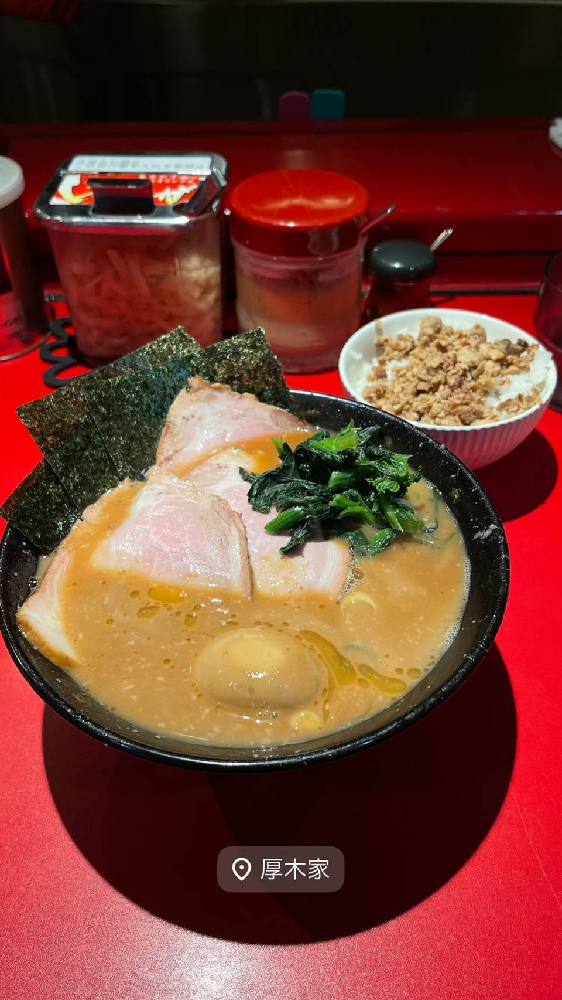

ラーメン · 家系 · 厚木
★ また行きたい家系で1位
厚木家
家系総本山「吉村家」創業者の実子が営む直系の一杯
厚木家
家系ラーメンの原点「吉村家」の創業者を父に持つ実子が営む直系店。本厚木で伝統の豚骨醤油スープを受け継ぎ、家系ファンから高い評価を得ている。

TRIVIA
豆知識
- 店主は家系ラーメンの生みの親・吉村家創業者の実の息子
- 家系総本山「吉村家」の実子が営む数少ない直系店の一つ
REVIEWS
世間の評判
99.5ラーメンDB3.76食べログ
バランス抜群の家系と長い行列
- 濃厚でキリッとしたスープと絶妙なバランスを評価する声が非常に多い
- 行列は50人以上に及ぶことがあり1時間前後待つこともあるという声が多い
- 吉村家や末廣家と並ぶ味だと絶賛し直系屈指の名店だと評価する声もある
ラーメンデータベース 口コミ642件・総合9位・最新 2026-09
| 創業 | 2005年11月開店 |
|---|---|
| 系譜 | 家系ラーメンの総本山「吉村家」の直系店 |
| 看板 | チャーシューメン、ラーメン |
| こだわり | 家系の伝統的な豚骨醤油スープで、麺の固さ・味の濃さ・脂の量を注文時に選べる |
| 掲載・評価 | ラーメンデータベースで家系ラーメン中トップクラスの評価を獲得 |
| どこから | 東京から1時間ほど |
| 行くなら | 行列 |
| 営業時間 | 月〜土 11:00-21:00 日 休み |
| 予算 | 昼 ～¥999 夜 ～¥999 |
| 定休日 | 日曜日 |
| 場所 | 本厚木駅 神奈川県厚木市 |
| メモ | 家系ラーメンの実子直系店として神奈川県央エリアを代表する存在 |
食べたもの：家系ラーメン
ひとりで入りやすい
OFFICIAL
店からの知らせ
NEARBY
近い店・同じ系統の店
-
 ★
家系 白楽駅
ラーメン 末廣家
吉村家直系、吊るし焼きチャーシューが看板の家系
夜 ～¥999
★
家系 白楽駅
ラーメン 末廣家
吉村家直系、吊るし焼きチャーシューが看板の家系
夜 ～¥999
-
 ★
家系 蒲田
らーめん飛粋（HIIKI）
国産豚骨と鶏ガラを別炊きにしたマイルドな家系ラーメン
昼 ¥1,000～¥1,999 夜 ¥1,000～¥1,999
★
家系 蒲田
らーめん飛粋（HIIKI）
国産豚骨と鶏ガラを別炊きにしたマイルドな家系ラーメン
昼 ¥1,000～¥1,999 夜 ¥1,000～¥1,999
-
 ★
家系 横浜駅
家系総本山 吉村家
家系ラーメン全体の元祖・総本山で全国の家系はここから広がった
昼 ¥1,000～¥1,999 夜 ¥1,000～¥1,999
★
家系 横浜駅
家系総本山 吉村家
家系ラーメン全体の元祖・総本山で全国の家系はここから広がった
昼 ¥1,000～¥1,999 夜 ¥1,000～¥1,999
-
 ★
家系 神田
神田ラーメン わいず（神田本店）
修行先譲りの濃厚豚骨醤油スープと三河屋製麺の多加水太麺
昼 ¥1,000～¥1,999 夜 ¥1,000～¥1,999
★
家系 神田
神田ラーメン わいず（神田本店）
修行先譲りの濃厚豚骨醤油スープと三河屋製麺の多加水太麺
昼 ¥1,000～¥1,999 夜 ¥1,000～¥1,999
-
 ★
家系 末広町駅
王道家直系 IEKEI TOKYO
家系四天王「王道家」の直系、東京店だけの自家製麺
昼 ～¥999 夜 ～¥999
★
家系 末広町駅
王道家直系 IEKEI TOKYO
家系四天王「王道家」の直系、東京店だけの自家製麺
昼 ～¥999 夜 ～¥999
-
 ★
家系 下永谷
環2家
昼 ～¥999 夜 ～¥999
★
家系 下永谷
環2家
昼 ～¥999 夜 ～¥999